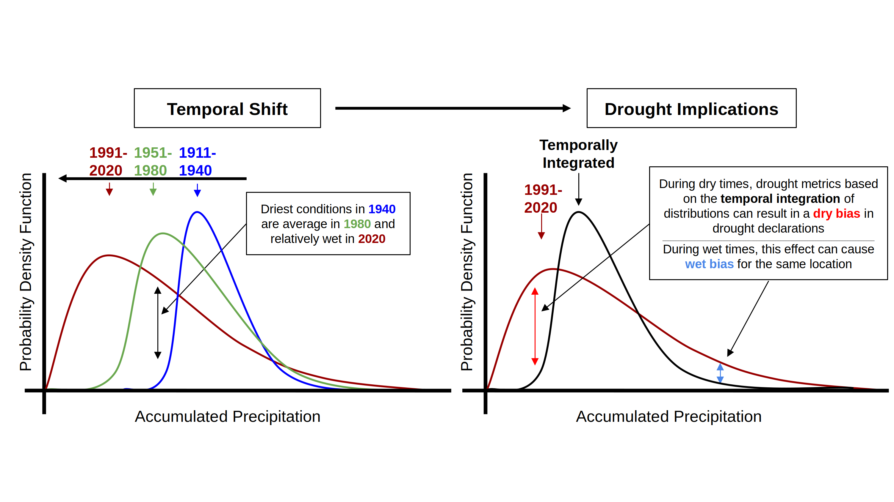
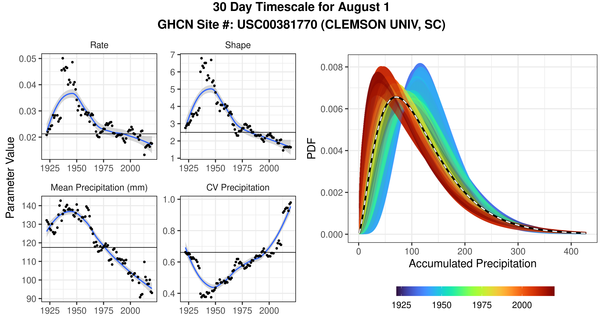

2 Climatology Length
2.1 Climate Change is Imacting Drought Assessment
Climate change is impacting water supplies for communities and ecosystems around the world. Several regions of North America are experiencing decreases in annual rainfall, shifts in the seasonality of precipitation, and an increased frequency of extreme precipitation events. A lack of rainfall can contribute to anomalously dry conditions, leading to cascading water deficits across the entire hydrological system. Therefore, rainfall deficits play an important role in determining where and when drought is occurring. Drought intensity is characterized according to how much moisture is expected in a given location and/or time period. This important concept means that drought is relative and dependent on the base-line reference conditions against which today’s conditions are compared. For example, a missing inch of precipitation may be of no concern to communities on the coast where precipitation is abundant, but may have catastrophic implications for communities in more arid regions.
 Figure 1: Conceptual model describing the drought metric bias associated with a non-stationary climate scenario. A theoretical accumulated precipitation dataset is presented on the horizontal axis, while the associated probability density function (PDF) is on the vertical axis. [left] Conceptual model showing one way probability distributions can shift in time when conditions transition from a wetter less variable state to a drier more variable state. [right] Demonstration of how this shift can produce both a dry bias during dry times and a wet bias during wet times for a theoretical distribution.

Figure 2: Probability distribution shift for Global Historical Climatology Network (GHCN) site USC00381770 located at Clemson University in South Carolina. [left] Subplots show 30 year moving window values of the rate and shape gamma distribution parameters, mean precipitation and coefficient of variation (CV) of precipitation for a 30 day time scale on August 1st. Horizontal lines represent values computed using the temporally integrated distribution. [right] Probability density functions (PDFs) for each of the 30 year moving windows. The color scale represents the 30 year moving window’s final year and the black and white dashed line represents the temporally integrated PDF.
2.2 Shorter Climatology Lengths Capture Current Climate
In an era of rapidly changing climate conditions, shorter reference frames (e.g. climatology lengths) more appropriately describe current climate conditions. Therefore, a more recent and contemporary reference frame better describes current day drought risk and event severity. The UMRB Drought Dashboard follows this important consideration and utilizes a 30-year moving window approach to describe current drought conditions. This 30-year moving window is updated every year as new data is available. As is described in Hoylman et al., 2022, a 30-year reference frame is well suited to balance the statistical constraints on computing drought metrics while maintaining a contemporary perspective on drought severity.